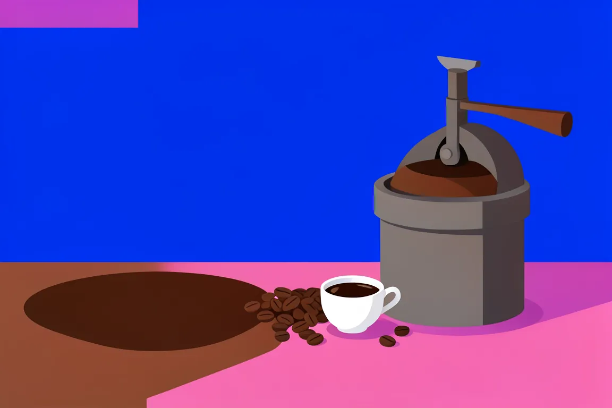

internet · 2014–present · also: Material, Google Material, Material 2
A system of flat coloured surfaces that sit at defined elevations and cast shadows from a top-left key light, with bold colour, an 8dp grid and purposeful motion. Google announced it at I/O in June 2014.

Core thesis
Digital surfaces behave like sheets of paper with thickness and shadow, so that depth and motion explain the hierarchy of the interface.
Design principles
Treat every surface as a sheet of paper of 1dp thickness that never bends, never changes size by stretching and never passes through another surface.
Express hierarchy with elevation in dp: 0 for the page, 1 for cards, 4 for the app bar, 6 for a floating button at rest, 8 for a menu, 16 for a navigation drawer and 24 for a dialog.
Build every layout on an 8dp grid, with 4dp for small type and icon alignment, and 48dp touch targets.
Use bold colour from a primary and an accent hue, with the status bar in the 700 shade of the primary and the app bar in the 500 shade.
Use large type with a defined scale of 12, 14, 16, 20, 34, 45 and 56sp in Roboto.
Give every touch a response: a circular ripple that grows from the touch point over 300ms.
Move elements along curved paths with an ease that starts fast and ends slow, and make each motion explain where an element came from.
Anti-patterns
Gradients and textures on surfaces
Shadows with no consistent elevation level or with different light directions
Surfaces that overlap at the same elevation
Touch targets under 48dp
Colour text on a coloured background below 4.5:1
Instant state changes with no motion or ripple feedback
More than one floating action button on a screen
Palette
Surface #FFFFFF card and sheet surface
Background #FAFAFA page background
Indigo 500 #3F51B5 primary and app bar
Indigo 700 #303F9F status bar
Pink A200 #FF4081 accent and floating action button